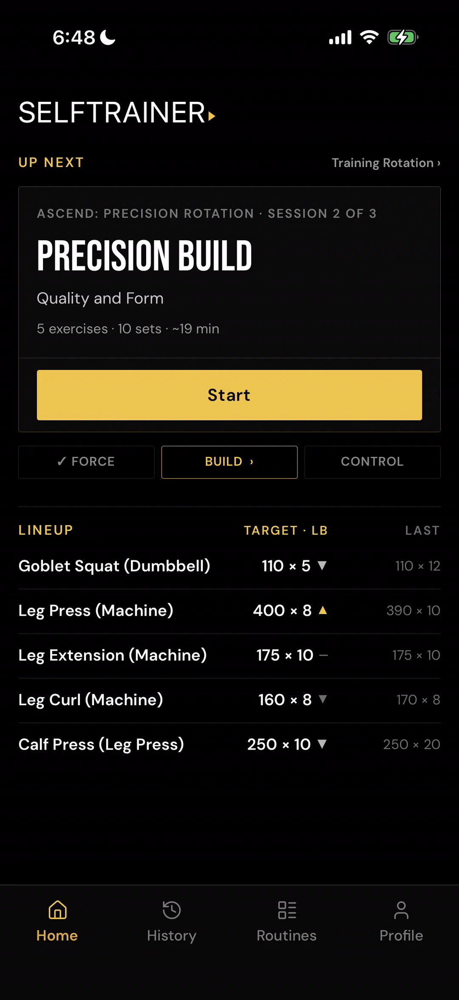
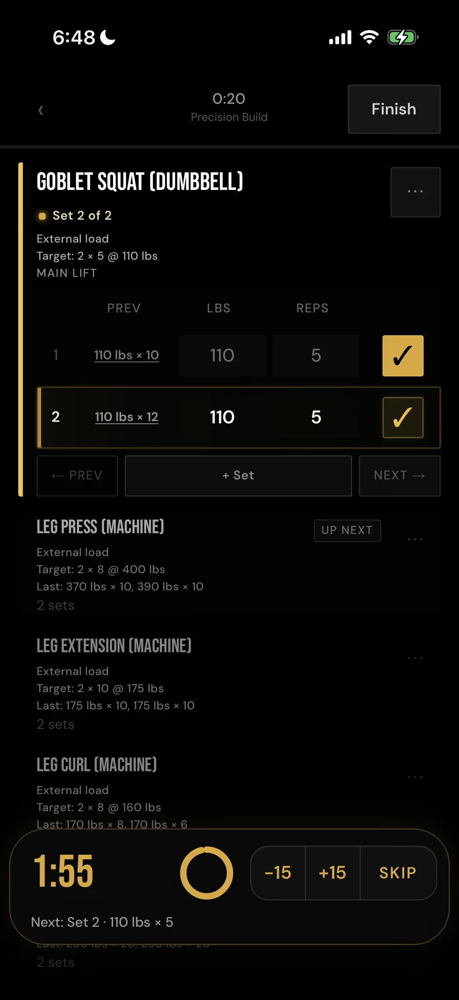
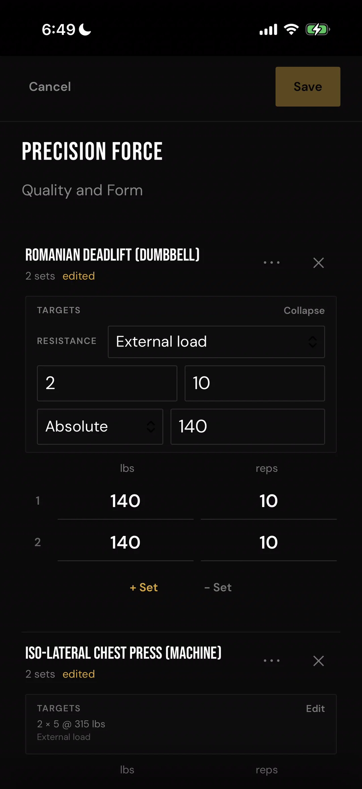
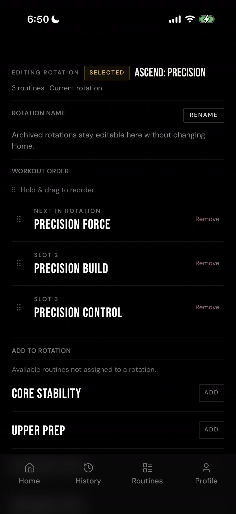
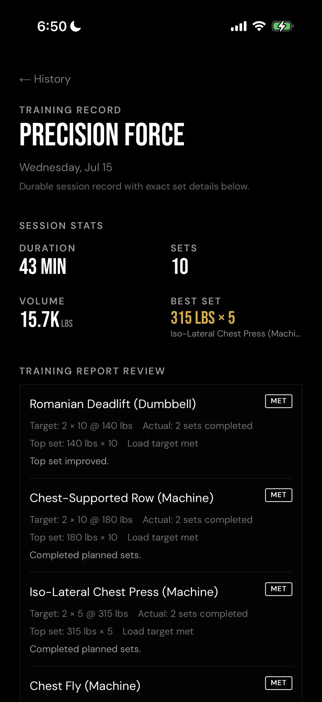
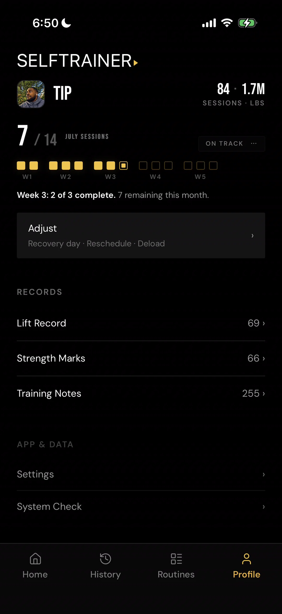

Execution-first hierarchy
The next useful action receives priority over secondary analysis.
Case study / SelfTrainer
SelfTrainer is an execution-first training system built to keep the lifter close to the planned work, the next honest action, and a trustworthy record of what was completed.
It is not designed to turn training into another dashboard to manage. It is designed to reduce friction before, during, and after the session.
The gym floor is an execution environment.
Many training tools are strongest before or after the workout. Active training asks for faster comprehension: what was planned, what has been logged, what changed, and what remains.
SelfTrainer reduces the distance between intention and execution, then protects the completed record so later changes cannot quietly rewrite the session.
Serious independent lifters who already train with intent and want a calmer system for planning, executing, adjusting, and preserving their work.
SelfTrainer is not primarily a social feed, a generic workout-content library, an entertainment-first fitness product, or a substitute for judgment.
The interface evidence below comes from the mature SelfTrainer PWA, the current behavioral and persistence benchmark. The Native rebuild is translating these established workflows into a device-native experience.






The PWA proved what the product needed to do. Native is proving that the same rules can survive device behavior, interrupted sessions, touch interaction, and the trust demands of a real gym-floor workflow. This is not a visual port alone.
Personal use established the rhythm from current program to completed history.
Touch targets, keyboard behavior, focus, and layout are tuned for the device in hand.
Programs determine sequence, drafts preserve active work, and completed sessions own their facts.
Interrupted sessions, resume paths, and navigation protection are hardened against loss or duplication.
Planned values, logged results, routine edits, and historical truth have distinct roles.
Gestures, safe areas, audio, haptics, and system behavior are handled where they apply.
The behavioral benchmark came from using the product for real training.
Device verification, regression protection, and edge-case recovery prepare the core for future release.
The next useful action receives priority over secondary analysis.
A prescription communicates intent; session data records execution. They remain related but distinct.
Later routine edits must not rewrite what a completed workout originally contained.
Interrupted sessions return as they were, without duplicated sets, reseeding, or lost edits.
When data cannot be calculated reliably, the interface says so instead of inventing a zero or empty success state.
Black, warm gold, strong typography, and limited motion support focus rather than compete with it.
Current status
Native rebuild in progress
The product is mature enough to have a trusted behavioral reference and active native implementation, but it remains under development.
Deferral is part of the product strategy. SelfTrainer is being completed from the execution core outward rather than broadened before its central promises are dependable.